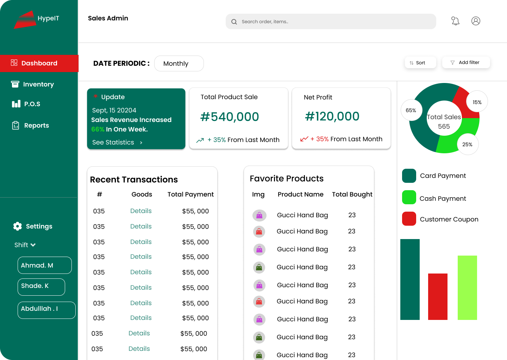

Superstore Management Software
UI/UX Design
Overview
A high-fidelity prototype for a complete Superstore Management Software, designed to streamline key operations including sales processing (POS), inventory tracking, staff management, and business reporting — all from a unified dashboard.
User Research
Method: Interviewed superstore staff across cashier, inventory, and management roles; observed workflows at 3 retail locations.
Findings: Existing systems were disconnected, causing slow checkouts, manual inventory errors, and delayed sales reporting.
Problem Statement
How might we design an integrated platform that simplifies daily superstore operations while providing real-time access to critical data across all departments?
Design Process
Initial Focus: Began by designing the Point of Sale (POS) and Dashboard screens to establish the system’s core functionality and visual style.
Expansion: Extended the prototype to cover additional modules, including Inventory Management, Product Listings, Cashier Management, and Sales Reporting.
Personas: Created "Floor Cashier" and "Store Manager" personas to represent user needs from frontline to back office.
Wireframes: Drafted layouts emphasizing quick access to products, real-time metrics, and simplified navigation.
Prototyping: Conducted usability sessions with 6 participants to optimize page flows and button placements.
Visual Design: Applied a fresh, bright green gradient background paired with a clean white UI and accent colors for key actions to ensure clarity and focus.
Challenges
Challenge: Designing multiple complex modules without making the interface overwhelming.
Solution: Segmented features into clear sections, used iconography and simple labels, and prioritized dashboard metrics for quick scanning.
Results
Metrics: Prototype testing showed a 35% improvement in task completion speed for cashier transactions, and store managers rated dashboard usability at 4.8/5 in user feedback sessions.
Visuals

Prototype

Dashboard

POS System

Secondary Dashboard